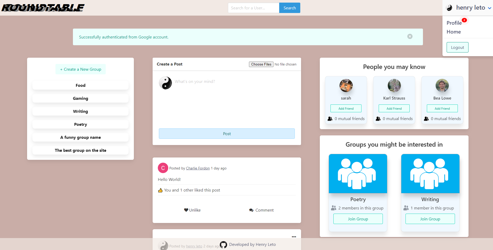
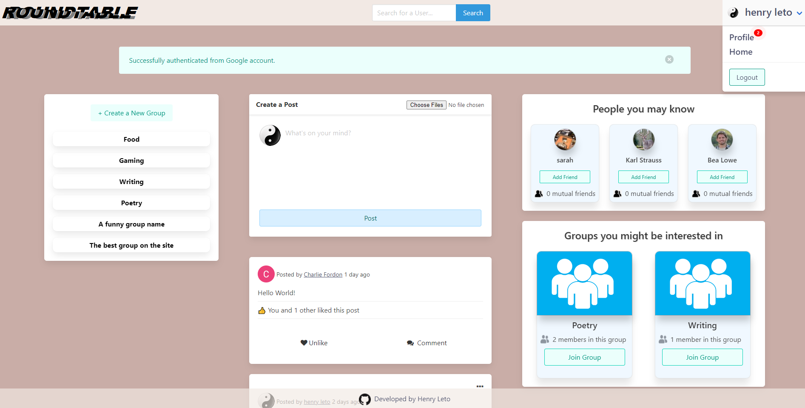

Roundtable
Written with Ruby on Rails, my social media site, Roundtable, has many of the quality-of-life features expected of a modern social media app. This fullstack application uses the poweful combination of Ruby on Rails + PostgresSQL on the backend, along with Javascript and Bulma CSSon the front end.
Users on Roundtable can make posts, comment on posts, and comment on comments (nested-comments). Post's can be image or text with up to three images per post. Users can also create groups, which have an owner, admin and users, as well as a custom and private feed for each group. Addionally, Users can send and receive friend requests, and accept or deny these requests.
I also implemented both Google and Github API support using Oauth2, which allows users to import their information from these sites and create a profile on Roundtable.